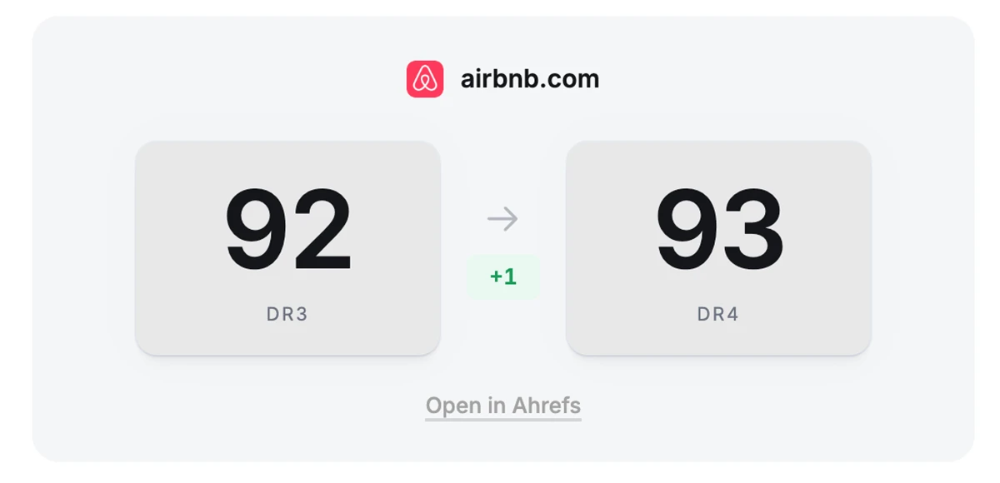
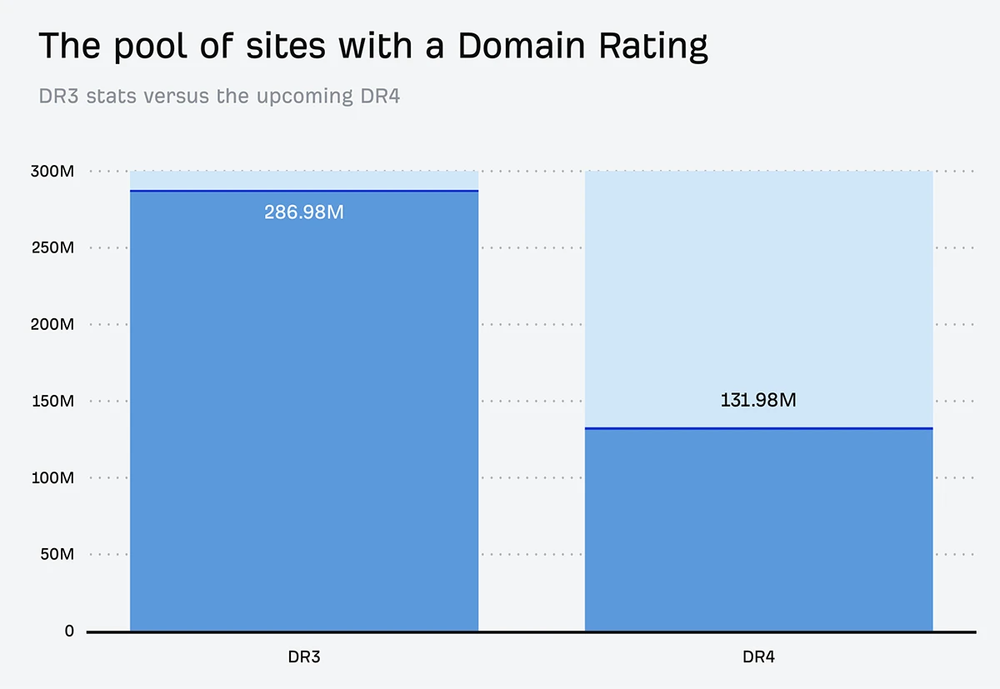
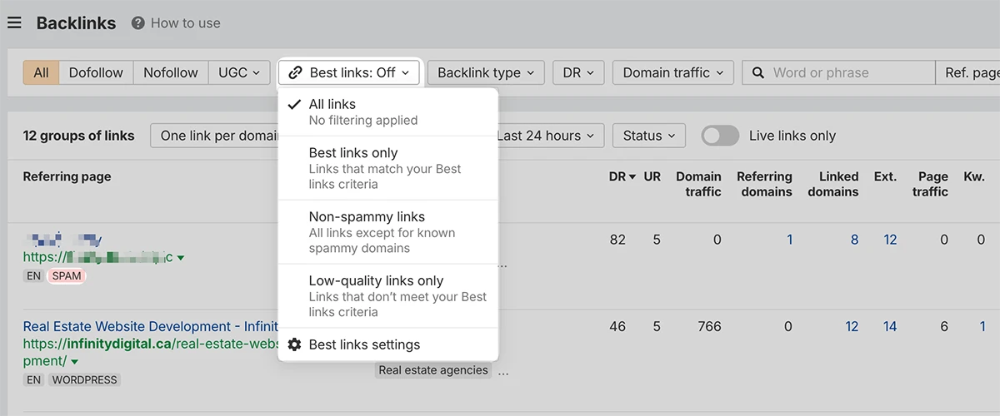
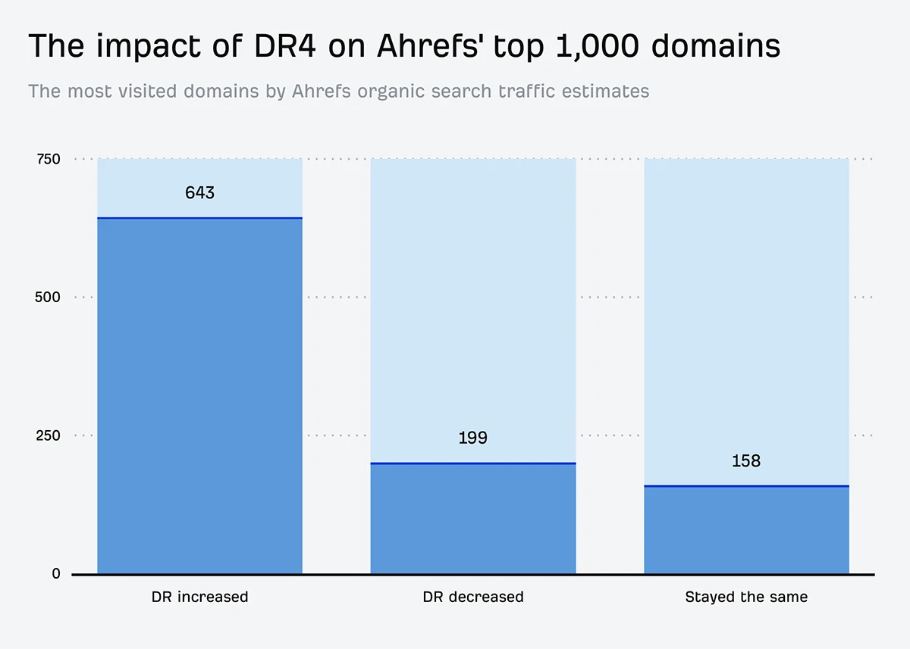
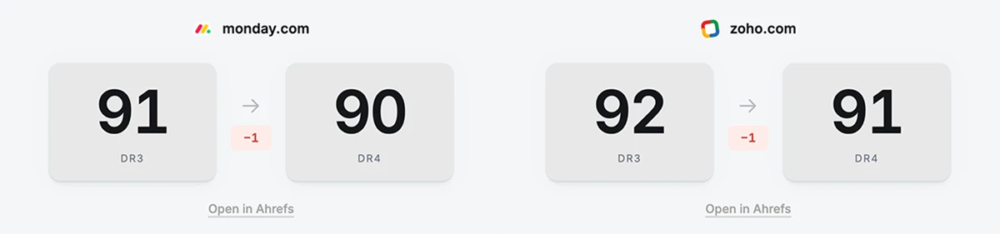

未来几周内，我们将上线 Domain Rating（DR）指标的更新。DR 用于衡量一个网站外链档案的强度，并与我们数据库中的其他网站做相对比较。
因此，你可能会发现自己的 DR 发生变化。
第四次迭代（DR4）包含两项重大更新：一是能够影响 DR 的域名池更小、质量更高；二是应大量用户请求，为单个子域提供独立评分。
这意味着像 help.ahrefs.com 这样的子域现在会有自己的评分（DR 75），与 ahrefs.com（DR 92）分开计算。
在我们的测试中，DR4 在所有主机和子域上与 Google 排名位置的相关性，强于当前模型（DR3）。
如何在 DR4 正式上线前查看自己的分数
下面会详细介绍这些更新。如果你想在广泛开放之前先看到自己的数字，有两种方式。
第一种是在免费的 Domain Rating API 端点 中使用一个新的 API 参数。
默认情况下返回当前的 DR3 数值；在请求中加入 version=dr4，即可获得更新后的分数。

此外，我创建了一个演示页面 detailed.com/dr-v4/，你可以在那里查看示例变化，并搜索特定域名或子域。
拥有 DR4 评分的网站数量约为 DR3 的一半
我们一直明确说明，Domain Rating 是一个基于外链的指标，不会考虑域名年龄或网站内容质量等因素。
它仍然根据外链计算，但我们现在会给予那些我们估计拥有自然搜索流量的网站（及其各个子域）更多权重。
结果是，拥有 DR4 评分的网站数量约为拥有 DR3 评分的一半。

这也意味着，现在能影响其他网站 DR 的域名池变小了。
子域获得独立评分，不再继承根域名的 DR
如果你曾按 Domain Rating 排序我们的外链报告，很可能看到热门网站的子域排在结果前列。
GitHub Pages 站点、Blogspot 博客，以及托管在其他热门建站平台上的站点，可能占据结果前列，即使这些子域本身并没有很强的外链档案。
现在，这些子域将根据指向它们的外链的相对强度，获得自己的评分。
| 子域 | DR3 | DR4 |
|---|---|---|
| help.ahrefs.com | 91 | 75 |
| play.google.com | 100 | 96 |
| blogs.microsoft.com | 96 | 87 |
| finance.yahoo.com | 94 | 92 |
| blogs.oracle.com | 93 | 85 |
| insights.samsung.com | 92 | 73 |
| example*.hostingersite.com | 92 | 1.9 |
| example*.notion.site | 92 | 0 |
过去也有少数例外，它们的子域已经有独立评分；现在这一做法会推广到更大范围。
旁注：*示例是指向 Ahrefs 的子域的真实结果，但不代表这些域名的全部子域。
在所有主机和子域上，DR4 与 Google 排名位置数量的相关性更强
在 1000 万个域名/主机上，DR4 与 Google 前 3 名和前 10 名排名位置的相关性更强。
当前 DR3 指标与根域名排名的相关性更高，这正是 DR3 设计时的核心。
| 子集 | n（样本数） | 前 3 名 vs DR3 | 前 3 名 vs DR4 | 前 10 名 vs DR3 | 前 10 名 vs DR4 |
|---|---|---|---|---|---|
| 全部主机 | 10,000,000 | 0.128 | 0.332 | 0.140 | 0.359 |
| 根域名 | 5,231,436 | 0.382 | 0.295 | 0.407 | 0.304 |
| 子域 | 4,768,564 | 0.126 | 0.225 | 0.172 | 0.259 |
DR4 采取更全面的视角，按每个主机自身的表现评分，使其整体相关性提升超过 2.5 倍。
DR4 显著降低被标记为垃圾（Spam）的域名的评分
在各种外链报告中，你可能会看到某些链接旁边带有 Spam 标签。

我们最初在 2025 年推出这个标签，基于人工整理的域名清单。2026 年 1 月，我们改用机器学习模型来自动检测垃圾域名。
被这样标记的域名会自动从新外链邮件中排除，也可以在各种外链报告中轻松筛选掉。
DR3 分数在 30 到 70 之间的垃圾域名降幅最大，中位数约为 15–20 分。
非垃圾域名则相对稳定，在大多数 DR3 区间内，DR4 变化的中位数通常接近 0。
在 Ahrefs 按自然搜索流量估算排名前 1000 的域名中，64.3% 的 DR 上升
我使用 AhrefsTop.com 的数据，对比了我们估算的全球自然搜索流量最高的网站在 DR4 与 DR3 下的变化。

15.8% 的 Domain Rating 保持不变，19.9% 下降。
「但为什么一些流量最高的域名 DR 会下降？」
虽然有下降，但幅度相对较小：平均下降 7.3 分，中位数为 4 分。
回答这个问题，也正好可以回顾 DR4 的主要变化。
最大的「输家」之一是 github.io——GitHub 用来托管免费 GitHub Pages 服务的域名，它下降了 32 分。
这与他们的主站 GitHub.com 是分开的。
它的子域，例如 facebook.github.io，仍然会有很高的 Domain Rating（本例中为 DR 86）。
DR 下降并不代表对你的内容或网站质量的评判
Domain Rating 的重点一直是帮助判断一个网站外链档案的强度，这对于外链挖掘、判断某些搜索结果中的排名难度等场景很有用。
它不反映你的内容质量、影响力，也不反映外链档案之外的任何东西。
如果你看到自己的 DR 下降，可能会怀疑自己是不是做错了什么。
不，你没有做错，但我理解你想了解更多。
我的第一个建议是，在 Ahrefs 中检查你的外链档案。
分数更低只是意味着，我们没有看到足够多指向你网站的「高质量」链接，足以把分数推得更高。
（请记住，Domain Rating 是相对于我们数据库中的其他网站计算的，并且是对数刻度，所以从 84 升到 85 比从 54 升到 55 更难。）
我也建议看看最接近的竞争对手的分数。他们可能也会出现类似变化，这有助于你更客观地看待结果。
在 DR4 下，Monday.com 的 DR 会略微下降，从 91 降到 90。

Zoho 等竞争对手也会下降 1 分（降至 DR 91），而 Teamwork.com 保持 DR 82 不变，Airtable 则略微上升到 DR 92。
如果你要汇报这些数字，最好同时呈现多个网站的情况，以及你们的外链档案在哪里一致、在哪里不同。
我们会缓慢推送这次更新，给你时间检查分数并反馈
这次更新将于 12 月 1 日在标准的 Ahrefs 界面中上线。
在此之后的一小段时间内，你仍然可以通过我们的 API 对比 DR3 分数。
过去五周里，我检查了数千个域名，并在相关情况下向开发团队提供了反馈。
我们还询问了一小组活跃 SEO 从业者的看法，得到了非常积极的回应。
现在，我们向所有人开放了在正式上线前查看自己分数的机会。
你目前可以通过免费的 Domain Rating API 使用 version=dr4 参数查看新的 Domain Rating 分数，或者通过我搭建的演示页面查看：detailed.com/dr-v4/。
我们知道这个指标有多受欢迎（免费的 Domain Rating API 上线不久后日请求量就达到了 1000 万次），也认为有必要给大家时间检查更新后的分数。
我们预计会通过社交媒体和其他渠道收到反馈；此外，如果你有希望我私下阅读的意见，我还临时开放了一个 反馈表单。
我们非常期待把这个更新分享给大家，也希望你喜欢这些变化。